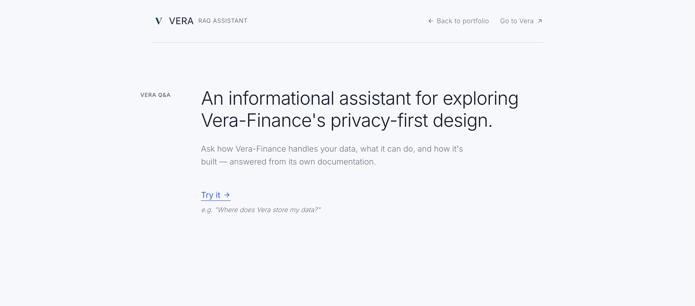

RAG
Assistant
VizyonVision
Yapay zekâ odaklı proje programı kapsamında, tamamen çevrimdışı çalışabilen, güvenli ve hızlı bir soru-cevap asistanı (RAG) tasarlamak temel hedefimizdi. Veri gizliliğinin ön planda olduğu senaryolar için dışarıya veri sızdırmayan bir yerel sistem kurgulamam gerekiyordu.
As part of an AI-focused project program, our primary goal was to design a fully offline, secure, and fast Q&A assistant (RAG). I needed to build a local system that wouldn't leak data, specifically for scenarios where data privacy is paramount.
Geliştirme SüreciDevelopment
Sistemi Microsoft Foundry Local ve SQLite altyapısı üzerine inşa ettim. Vektör arama, embedding modelleri ve büyük dil modeli (LLM) entegrasyonu süreçlerinin tamamını uçtan uca kendim yöneterek, modern yapay zeka mimarilerini pratiğe döktüm.
I built the system using Microsoft Foundry Local and SQLite infrastructure. I managed the entire process from end to end—including vector search, embedding models, and large language model (LLM) integration—putting modern AI architectures into practice.
SonuçResult
Sonuçta, dış internet bağlantısına ihtiyaç duymadan kendi başına çalışabilen, yüksek performanslı bir asistan ortaya çıktı. Bu proje bana yapay zeka tabanlı bir ürünün çekirdekten itibaren nasıl geliştirileceğini uygulamalı olarak öğretti.
The result is a high-performance assistant that runs entirely on its own without needing an external internet connection. This project gave me hands-on experience in building an AI-based product from the core outwards.
